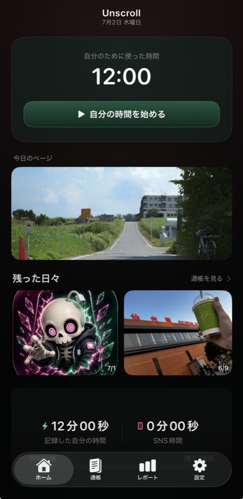
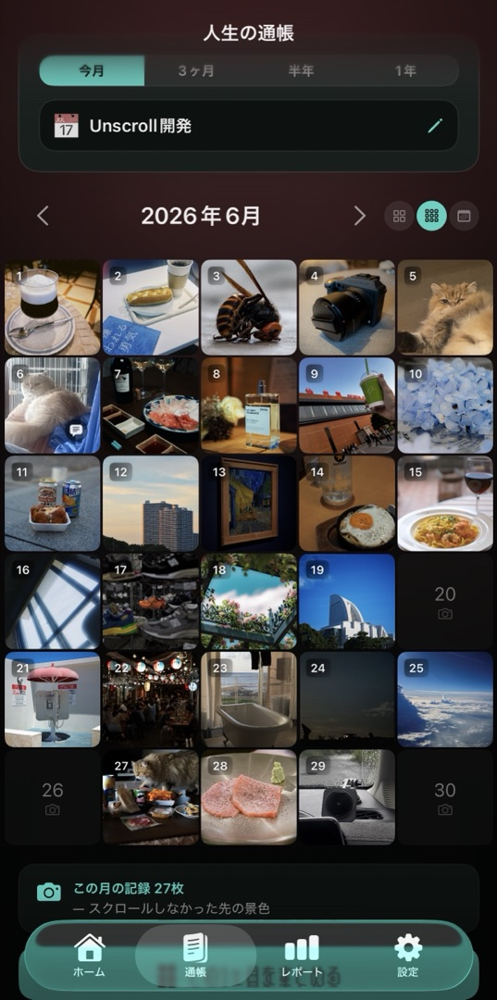
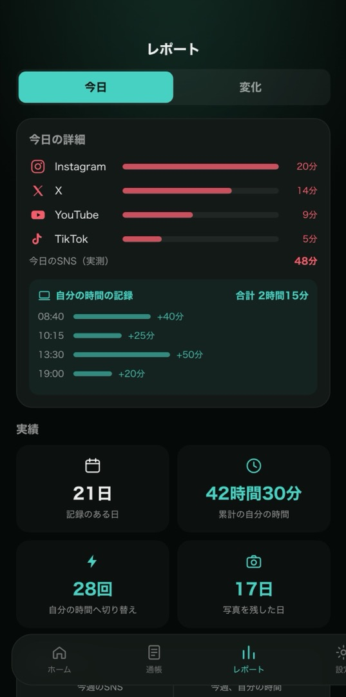

自分のために使えた時間が、数字と写真で残る。
SNSはやめなくていい。
目的のないスクロールだけ、自分の時間へ。流れてくる「いい」ではなく、自分が「いい」と思った今日を。
iPhone / iOS 17以降・無料で始められます
始めた分だけ、今日の自分に積み上がる。
今日・今週・今月。減ったかどうかではなく、どう変わったか。
思わず残したくなった一枚と一言を、その日の記録に。
気づいたら一日が終わっている。
あの一週間、何をしていたか思い出せない。
指を動かしていた時間だけではありません。
なんとなく流れに乗っていた時間も、同じように消えていきます。
失っているのは時間そのものより、覚えていられたはずの毎日かもしれない。
SNSは1日の予算の中で付き合う。
禁止でも我慢でもなく、方向転換。
そして、心を向けたその時間に撮れた一枚が、記録として積み上がる。

映える必要も、上手に撮る必要もありません。
自分が「いい」と思ったから残す。
その一枚が、通帳のように貯まっていきます。
誰かに見せるためじゃない。
あとで自分が思い出すために。
カレンダーの一日に、一緒に過ごした人を招けます。
それぞれが自分の9枚を持ち寄って、同じ一日を人数分の視点で残せます。
通知も、バッジも、「新着」もありません。次に開いたとき、そこにあるだけです。
持ち寄った写真はAppleのiCloudを通じて相手に届きます。開発者はその中身を見られませんその瞬間、Unscrollが「自分の時間」を差し出す。1分でも始めれば、そこから自分で選んだ時間に戻れる。
SNSは1日の予算の中で。記録している間は、そっと遮断。使う量は、自分で決めた上限まで。
思わず残したくなった一枚を、その日の通帳に。今週・今月・今年の自分が、形になる。
日々の記録と、その日の一枚。
数字と記憶が同じ通帳に並ぶから、自分のために過ごした時間が実感に変わる。
日・週・月・年でふりかえれば、自分の変化が見えてくる。


SNSの時間が何時間減ったか、ではなく。
1日が、前より長く感じるようになりました。
時間の使い方が変わって、毎日の出来事を思い出せるくらい、心にも時間にも余裕ができました。SNSの時間が減ったことよりも、そのあとの生活が変わったことのほうが大きいです。
— 継続してお使いの方自分の時間を、大切にしたくなるアプリです。
一番好きなのは、自分の時間を計測できること。何に時間を使っているか気づけて、1日の使い方を良くしようと前向きになれました。目的のないスクロールだけを減らす考え方なので、制限される窮屈さがなく、人にも勧めやすいです。
— 継続してお使いの方今日はこれだけ自分のために使えた、と見えるのが嬉しい。
以前ためしたポモドーロタイマーは続きませんでしたが、これは自分に使えた時間が積み上がるのが一目で分かるので続いています。時間の記録と写真の記録を一緒に残せるので、写真を撮るのが好きな人にも合いそうです。
— 継続してお使いの方スマホを閉じて、娘と過ごす時間が増えました。
娘のほうが理解が早くて、SNSを開いても5分で「この子💀が出てきたから」と自分でスマホを閉じています。そのあとは2人でお茶をしたり、娘の好きな制作をしたり。このやりとりが良いみたいで、親子関係がすごく良くなっている気がします。
— 娘さんと使っている方誰かが作った写真ではなく、自分たちで撮った写真で盛り上がっています。
10年ほど前から「その場の空気を目に焼き付けたい」と思って、あまり写真を撮らなくなっていました。使い始めてから日常の写真を撮る機会がかなり増えて、娘と一緒に撮ったり、猫の撮ったことのない姿を撮ったり。「手はこっち！」「もっとこう！」と2人で騒ぎながら撮っています。
— 同じ方から、後日※ 掲載は本人の許可を得た感想です。読みやすさのため要約・編集しています。感じ方には個人差があります。
一人ひとりの結果はちがいます。
まずは無料で、あなたの毎日で。
iPhone / iOS 17以降・無料で始められます
1日のSNS時間を入れてみてください。
1週間・1か月・1年で、どれだけの時間になるかが見えます。
この時間をどこに使うかを、自分で決めるためのアプリです。
作業したいのに、気づくとSNSをスクロールしている。集中できない自分が、ずっと嫌でした。だからSNSを開く前に「自分の時間を始める」仕組みを、自分のために作りました。
けれど、あとから気づいたのは、失っていたのは作業時間だけではなかったということです。目的なくSNSを見る時間を減らして過ごしたこの1年は、驚くほど濃いものでした。それまでの何年かは、ただ流れで生きていた気がします。目的なく見続けていた頃と、自分で時間の行き先を選ぶようになった今とでは、覚えている毎日の量がまるで違います。
その増えた「覚えている毎日」を残しておきたくて、写真の機能をつけました。やめなきゃいけない、とは言いません。やめたくないなら、それでいい。ただ、流れてくるものではなく、自分が「いい」と思えるものに時間を向けたいなら、その手伝いをしたいと思っています。
目的のないスクロールだけを、自分で選んだ時間へ。その時間に過ごしたことは、写真と記録として残ります。
無料で始められます。
記録も写真も、一日を人と持ち寄ることも
SNS全体の保護（複数のアプリをまとめて）と、すべての期間の振り返りはPremium（¥5,980/年・月額 ¥880）。
年額プランには14日間の無料期間があります。
iPhone / iOS 17以降・日本語と英語に対応。解約しても記録は消えません。
使い方の相談や要望、開発の様子はコミュニティで。参加は無料・いつでも退出できます。
開けなくするだけで終わりません。SNSは1日の予算の中で使い、そのぶん自分のために過ごした時間を計測して、その日に過ごしたことを写真で残します。残るのは「やめた記録」ではなく「過ごした記録」です。
いいえ。1日に使う時間はあなたが決めます。決めた分を超えたときだけ、そっと自分の時間へ向け直します。発信や連絡、仕事での利用を止めるためのアプリではありません。画面の中か外かも問いません。映画を最後まで見た夜も、本を読み切った日も、自分で選んで向き合った時間なら、それがあなたの時間です。
端末の中と、あなた自身のiCloudだけです。開発者のサーバーには送られません。書き出すかどうかも、誰かと持ち寄るかどうかも、あなたが選びます。持ち寄った写真もAppleのiCloudを通って相手に届くだけで、開発者はその中身を見られません。
写真も、一言も、自分の時間の記録も、月のまとめも、一日を人と持ち寄ることも、契約なしで使えます。SNSのブロックは、いちばん時間を使っているアプリ1つから。複数のアプリをまとめて守ることと、すべての期間の振り返りがPremiumです。年額プランには14日間の無料期間があります。解約しても、それまでの記録と写真は消えません。
その日に持ち寄った写真と、写真に添えた一言だけです。通帳のその日に書いたひとこと、お気に入り、記録した時間、ほかの日のことは相手に見えません。相手の写真もあなたの通帳には入らず、カレンダーに出るのはいつも自分の写真だけです。やめても、それまでに持ち寄った写真はお互いの手元に残ります。